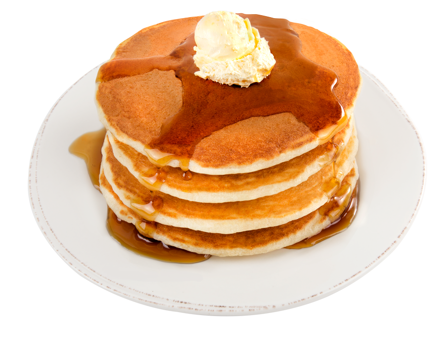

Rating:
⭐⭐⭐
Make Time : 20 Mins

Pancake
Elite Recipe for Morning Breakfast
Ingredients Required
- 1 Cup Flour
- 2 tablespoon sugar
- 2 teaspoon baking powder
- 1/2 teaspoon salt
- 1 Cup Milk
- 2 Tablespoon unsalted butter or vegetable oil
- 1 Large Egg
- 1 tablespoon vegetable oil
Lets Cook it
Step 1:
Preheat oven to 200 degrees; have a baking sheet or heatproof platter ready to keep cooked pancakes warm in the oven. In a small bowl, whisk together flour, sugar, baking powder, and salt; set aside.
Step 2:
In a medium bowl, whisk together milk, butter (or oil), and egg. Add dry ingredients to milk mixture; whisk until just moistened (do not overmix; a few small lumps are fine).
Step 3:
Heat a large skillet (nonstick or cast-iron) or griddle over medium. Fold a sheet of paper towel in half, and moisten with oil; carefully rub skillet with oiled paper towel.
Step 4:
For each pancake, spoon 2 to 3 tablespoons of batter onto skillet, using the back of the spoon to spread batter into a round (you should be able to fit 2 to 3 in a large skillet)
Step 5:
Cook until surface of pancakes have some bubbles and a few have burst, 1 to 2 minutes. Flip carefully with a thin spatula, and cook until browned on the underside, 1 to 2 minutes more. Transfer to a baking sheet or platter; cover loosely with aluminum foil, and keep warm in oven. Continue with more oil and remaining batter. (You'll have 12 to 15 pancakes.) Serve warm, with desired toppings.
üí´ And Here the pancake is now all yours ENJOY XD üí´
Make A perfect Combo with pancake